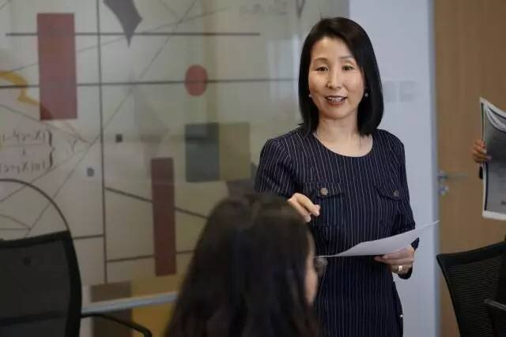

From the technical bench to the executive suite
I began my career as an engineer and researcher in one of Asia’s largest pharmaceutical companies, fascinated by systems and complex problems.
Over the years I moved through transition after transition — across functions, industries, countries, and cultures. I moved into international business and regulatory affairs, and eventually into general manager and managing director roles. There I was responsible for strategy, operations, commercial growth, and the health of the organizations I led.
Rung by rung, I had risen from the technical bench to the executive suite. Each transition brought opportunity. Each also brought uncertainty.
And somewhere in the middle of all that success, I quietly lost myself — and had to learn, without a map, how to find my way back.
What I discovered
Success in a leadership transition is rarely determined by technical expertise. The real work lies beneath it, in the patterns of identity, relationship, and context that a transition brings to the surface.
Every transition shows you the leader you have been, and calls forth the one you are growing into.
That realization led me to coaching.
What I do now
I am a leadership transition strategist, executive coach, and leadership development facilitator. I am also a Master Certified Coach with the International Coaching Federation, its highest credential. My coaching draws on the Co-Active principle that people are naturally creative, resourceful, and whole.
I spent twenty-five years in the corporate world. I began coaching in 2014 while still running a country business, and have coached full-time since 2020. In 3,500+ hours with 500+ leaders across 28+ countries and 80+ multinational organizations, I have witnessed a common truth: transitions do not simply change our circumstances. They invite us to expand our capacity.
Leadership Transition Intelligence™ emerged from that observation. It gives language to a capability leaders have always needed but rarely had words for, and it invites leaders to transform through change with awareness, coherence, and intention.
Its three stages first appeared in my 2023 book, Becoming the Manager You Were Meant to Be, and have been refined since through my work with leaders. Lead Through It develops them into the full framework.

A dimension the literature rarely names
For leaders who carry a bicultural or cross-cultural identity — formed in one context, leading in another — transition carries an extra layer. The values of harmony, collective orientation, and deference to authority that shaped your upbringing can sit in quiet tension with the assertiveness, self-promotion, and individual initiative that Western leadership cultures reward.
This is not a deficit. It is a complexity, and it deserves to be worked with rather than corrected. It is part of what I bring, and part of why some leaders find their way to me.
Credentials
- PhD, Molecular Biology & Biotechnology, Dalhousie University; MSc, Pharmaceutical Engineering, Shenyang Pharmaceutical University
- Visiting Scholar, Kitasato University & Institute, Japan, researching under Prof. Satoshi Ōmura, later a 2015 Nobel laureate
- ICF Master Certified Coach (MCC)
- ICF Mentor Coach Specialist (MCS)
- Certified Professional Co-Active Coach (CPCC)
- Faculty, inviteCHANGE — coach training and mentor coaching
- Certified in 360 leadership assessment and inclusive leadership development
- Twenty-five years in corporate leadership across pharmaceutical engineering, regulatory affairs, international business, and general manager and managing director roles
- Recognized as a Top Transition Coach (Coach Foundation) and one of Edmonton’s Top 15 Executive Coaches (Influence Digest, 2022)
- Author, Lead Through It: A Compass for Leadership Transition Intelligence (forthcoming) — read Chapter One free
- Author, Becoming the Manager You Were Meant to Be (2023) — on Amazon
- Coaching in English and Mandarin. Based in Edmonton, Canada; working with leaders internationally.
Why this work
The credential I trust most is the lived one: I have made these transitions myself, and I am making them still. Because the spiral does not stop. It ascends.
Leadership, in the end, is not measured by how well we avoid transitions. It is measured by how well we grow through them — and it would be my privilege to walk part of that journey with you.